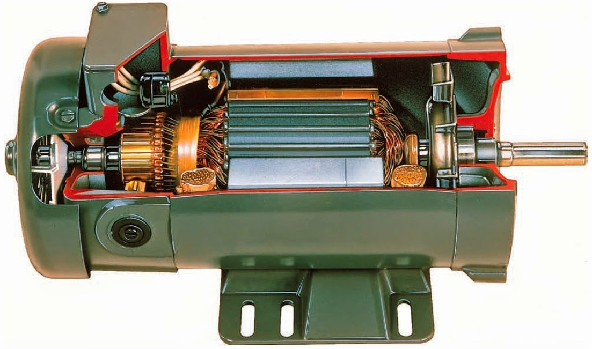
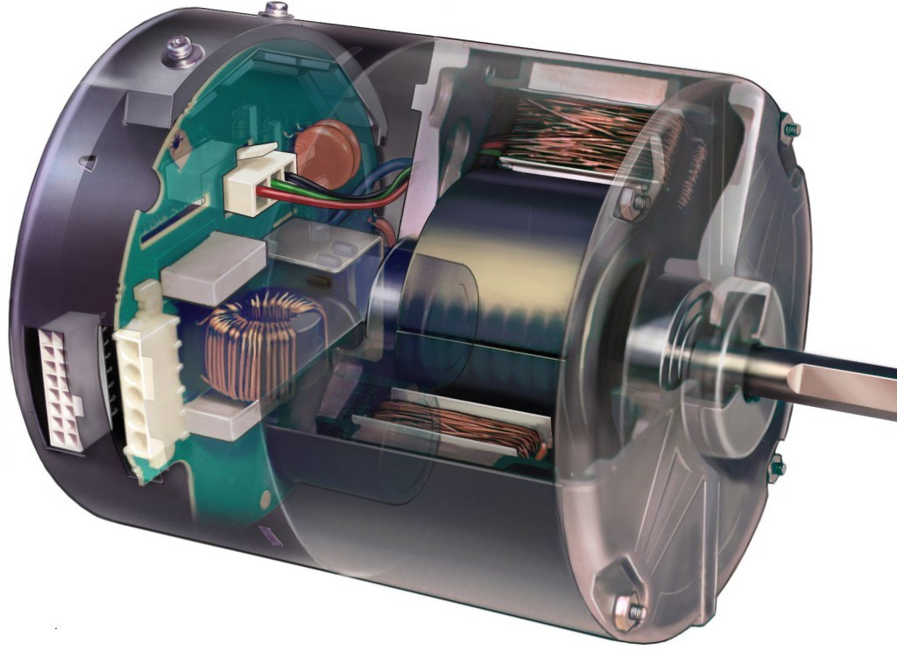
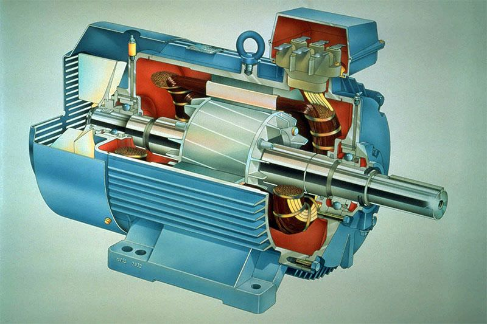
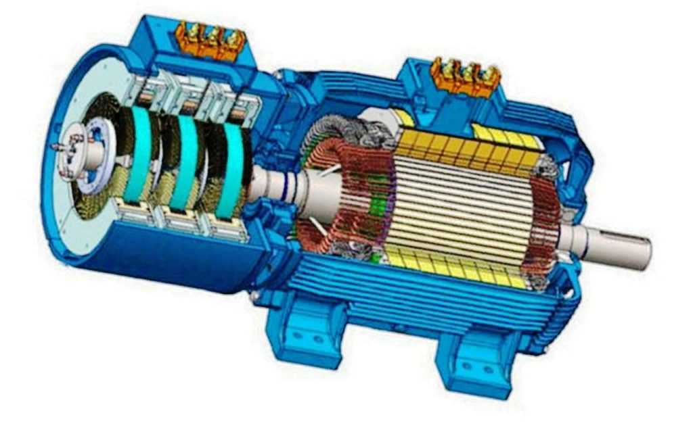

Про двигатели внутреннего сгорания все ясно и понятно объяснено вот в этом разделе.
Но ведь помимо ДВС существуют и другие типы двигателей с другим принципом работы.
Все возможные варианты перевода энергии химической реакции в движение чего-либо представлены ниже:
Реактивное движение может быть осуществлено силой реакции струи различных рабочих тел, однако при использовании реактивного принципа для движения в атмосфере таких тел, как самолёт или управляемый снаряд, виды рабочего тела ограничены. Практически для этой цели могут быть использованы только два вида рабочего тела.
Во-первых в качестве рабочего тела может быть использован атмосферный воздух, который предварительно должен быть сжат и подогрет. Для этого его смешивают с продуктами горения, образующимися при сгорании топлива. Энергия, выделяющаяся при сгорании топлива, используется для повышения температуры воздуха до желаемой величины.
Во-вторых, в качестве рабочего тела можно использовать газы высокого давления и высокой температуры, которые образуются в большом количестве при химической реакции, происходящей без участия атмосферного воздуха. Газовую струю, полученную указанным способом, называют ракетной струёй, а систему, в которой происходит химическая реакция, включая реактивное сопло, - ракетным двигателем.
1) тепловые реактивные двигатели (называемые также воздушно-реактивными двигателями), использующие или расходующие для создания газовой струи атмосферный воздух;
2) ракетные двигатели, которые не используют или не расходуют атмосферный воздух.
В нашем случае термин "реактивное движение" применяется к движению, осуществляемому с помощью двигателей двух типов: тепловых реактивных двигателей и ракетных двигателей.
Тепловые реактивные двигатели можно разделить на три основных типа:
1) прямоточные реактивные двигатели;
2) пульсирующие реактивные двигатели;
3) турбореактивные двигатели.
Каждый электродвигатель обладает некоторыми отличительными свойствами, которые обуславливают его область применения, в которой он наиболее выгоден. Синхронные, асинхронные, постоянного тока, коллекторные, бесколлекторные, вентильно-индукторные, шаговые.
Двигатель постоянного тока.

С этим двигателем все должны быть знакомы с детства, потому что именно этот тип двигателя стоит в большинстве старых игрушек. Внутри такого двигателя на валу установлен контактный узел – коллектор, переключающий обмотки на роторе в зависимости от положения ротора. Постоянный ток, подводимый к двигателю, протекает то по одним, то по другим частям обмотки, создавая вращающий момент. Двигатели постоянного тока бывают как очень маленького размера (вибромоторчик в телефоне), так и довольно большого – обычно до мегаватта (их устанавливают в электровозы). Главная проблема всех ДПТ, а в особенности ДПТ большой мощности – это коллекторный узел. Скользящий контакт сам по себе является не очень хорошей затеей, а скользящий контакт на киловольты и килоамперы – и подавно. В потребительском качестве ДПТ хорош своей простотой с точки зрения управляемости. Его момент прямо пропорционален току якоря, а частота вращения (по крайней мере холостой ход) прямо пропорциональна приложенному напряжению. Поэтому до наступления эры микроконтроллеров, силовой электроники и частотного регулируемого привода переменного тока именно ДПТ был самым популярным электродвигателем для задач, где требуется регулировать частоту вращения или момент.
Универсальный коллекторный двигатель.

Конструкция универсального коллекторного электродвигателя не имеет принципиальных отличий от конструкции коллекторного электродвигателя постоянного тока с обмотками возбуждения, за исключением того, что вся магнитная система (и статор, и ротор) выполняется шихтованной и обмотка возбуждения делается секционированной. Шихтованная конструкция и статора, и ротора обусловлена тем, что при работе на переменном токе их пронизывают переменные магнитные потоки, вызывая значительные магнитные потери. Универсальный коллекторный электродвигатель может быть включен как с последовательным, так и с параллельным и независимым возбуждением.
Асинхронный электродвигатель.

Еще более распространенным, чем коллекторные двигатели, является асинхронный двигатель. Только распространен он в основном в промышленности – где присутствует трехфазная сеть. его статор – это распределенная двухфазная или трехфазная (реже многофазная) обмотка. Она подключается к источнику переменного напряжения и создает вращающееся магнитное поле. Ротор можно представлять себе в виде медного или алюминиевого цилиндра, внутри которого находится железо магнитопровода. К ротору в явном виде напряжение не подводится, но оно индуцируется там за счет переменного поля статора (поэтому двигатель на английском языке называют индукционным). Возникающие вихревые токи в короткозамкнутом роторе взаимодействуют с полем статора, в результате чего образуется вращающий момент.
Синхронный электродвигатель.

Конструктивно синхронный электродвигатель состоит из неподвижного элемента, подвижной части, обмоток различного назначения, может комплектоваться коллекторным узлом. В основе работы синхронного электродвигателя лежит взаимодействие магнитного потока, генерируемого рабочими обмотками с постоянным магнитным потоком. Наиболее распространенной моделью синхронной электрической машины является вариант с рабочей обмоткой на статоре и обмоткой возбуждения на роторе. Основным отличием синхронного электродвигателя от асинхронного заключается в принципе преобразования электрической энергии в механическое вращение. У синхронного электродвигателя процесс вращения ротора идентичен вращению рабочего электромагнитного поля, вырабатываемого трехфазной сетью. А вот у асинхронного рабочее поле самостоятельно наводит ЭДС в роторе, которая уже затем вырабатывает собственный поток взаимоиндукции и приводит вал во вращение. В результате чего асинхронные электрические машины получают разность во вращении рабочего поля и нагрузки на валу, что выражается физической величиной – скольжением
Источник: https://www.asutpp.ru/princip-raboty-sinxronnogo-dvigatelya.html
Андрей Company. Все имеющиеся у меня права защищены